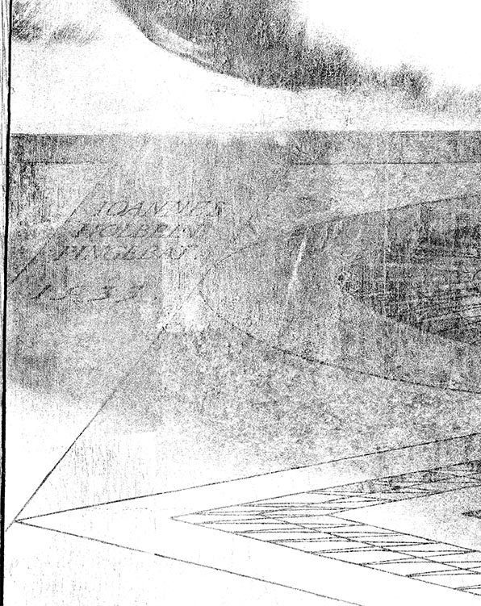
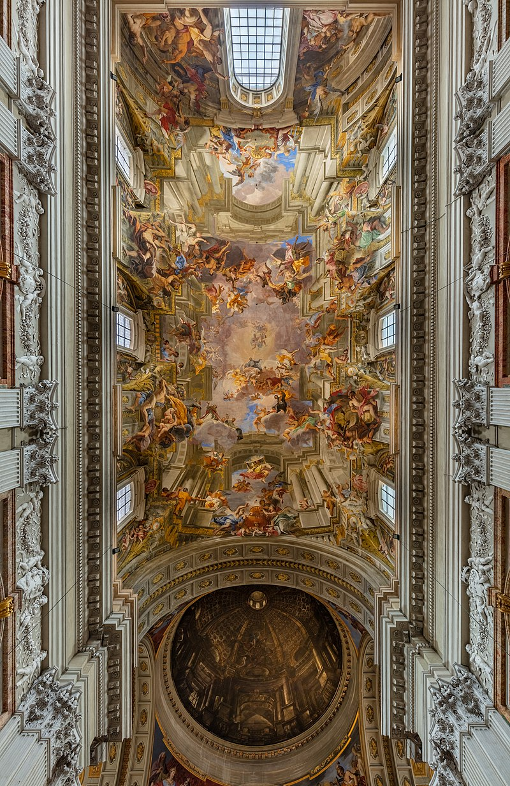

歪像（Anamorphosis） 是一种扭曲的投影，需要观看者占据特定的有利位置，使用特殊的设备，或同时满足两者才能够观看到可辨认的影像。 ——维基百科
大使们（The Ambassadors），1533， 小荷尔拜因（Hans Holbein the Younger）。
 下载大图
下载大图
这幅画中有相当多的细节，最奇特的莫过于底部变形的头骨。
更多细节
画中人物：左为法兰西派驻伦敦大使让·德·丹特维尔（Jean de Dinteville）。右为法王弗朗索瓦一世的外交使臣拉斐尔大主教乔治·得·塞尔维（Georges de Selve）。
画面异常精致，其中的每个物品都可以放大观看细节。比如左侧人物手持的匕首上刻着“29”，右侧人物胳膊压着的书上写着“24”，分别是两个人当时的年龄。
（以下解读综合了网上收集的信息，并不保证准确
铺著土耳其挂毯的木架上摆放了四大人文主义学科（音乐、数学、几何和天文）的道具，彰显了两人的身份与博学。
16世纪的欧洲，亨利八世挑起宗教改革运动，各教纷争不断。
左上角露出的耶稣受难像和架子下层上的路德教的赞美诗相对应，隐喻路德教的宗教改革与基督教的冲突。它们和各种科学仪器相对应，隐喻科学与宗教的冲突。
根据架子上层的仪器能推出1533年4月11日上午10点30分的日期。天球仪指向教宗驻地梵蒂冈，表明大使出使所执行的任务为代表教宗与英王亨利八世谈判，防止其背叛天主教，支持基督新教。
架子上层象征天堂。放着各种天文学仪器。
架子下层象征人间。各个物品摆放杂乱，代表人间不断的纷争。断弦的鲁特琴和翻开的乐谱，暗示谈判并不成功。
地面象征地狱。头骨代表基督教的死亡观：勿忘人终有一死。据说这个头骨是订单人丹特维尔的要求，丹特维尔喜欢头骨，有一种说法是因为他的名字的英文发音类似“中空的骷髅”。
地板上还藏着画家的签名。

安德烈·波佐画的圣依纳爵教堂的天顶壁画《圣依纳爵升入天堂》，成功制造了天顶无限延伸的错觉。
下载大图
这里还有一些依靠镜面圆柱体才能还原的图像。


更多